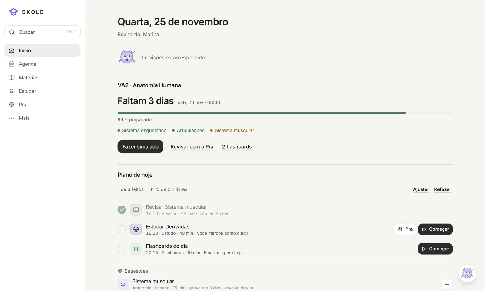
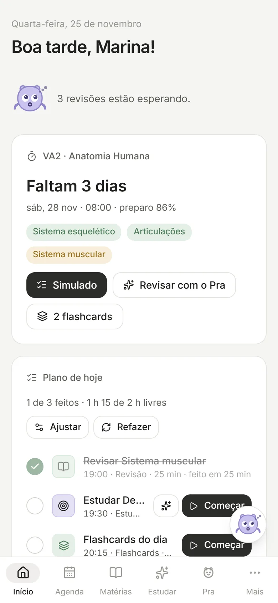
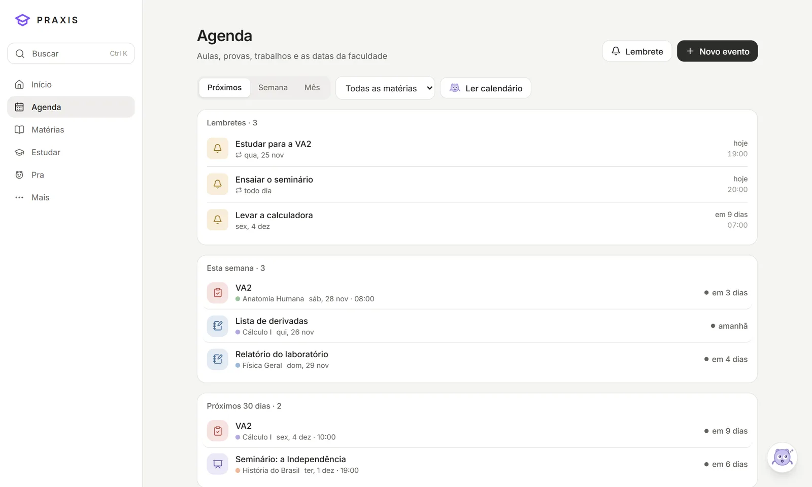
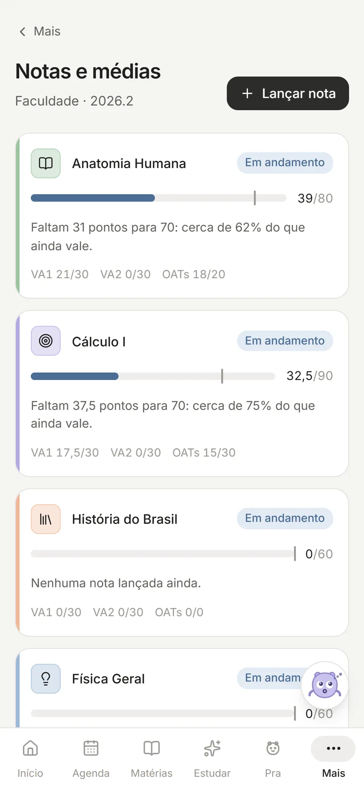
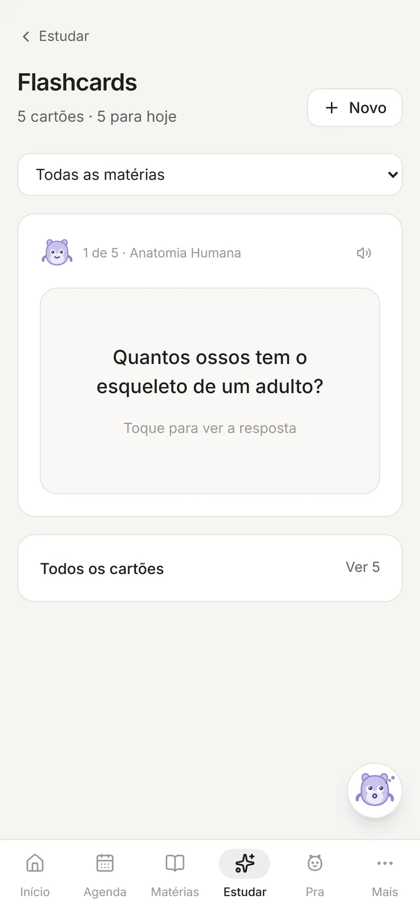
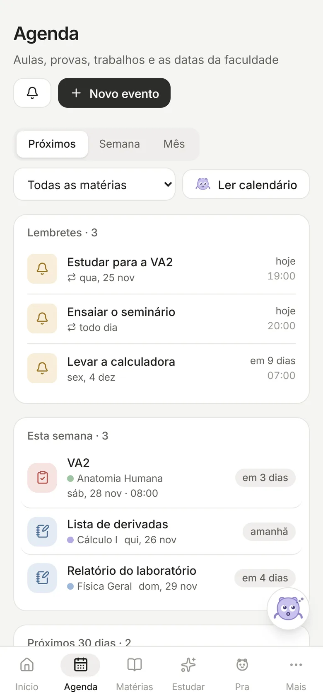
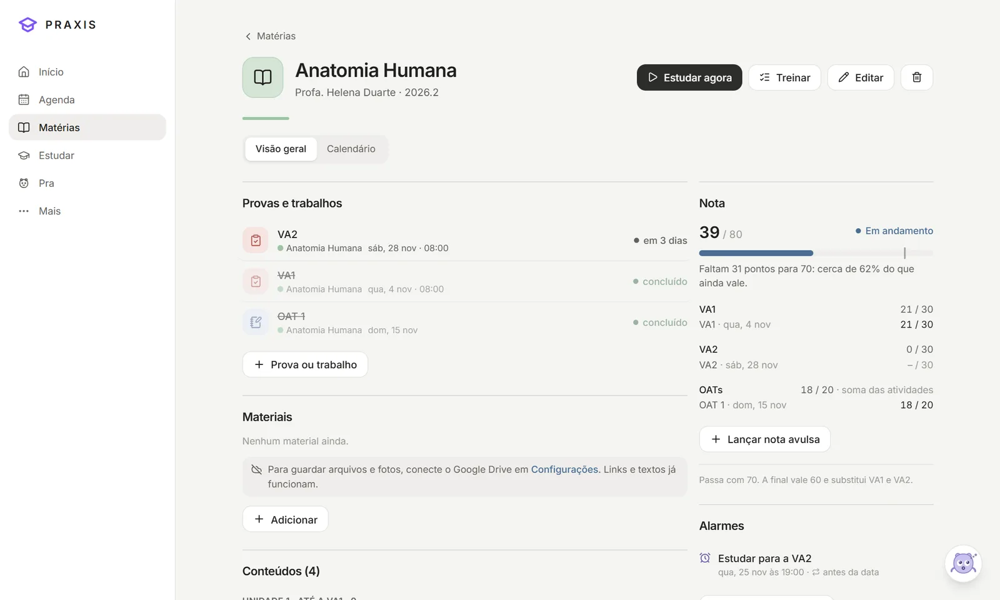

Passe direto com o .
Agenda de provas, notas, alarmes por matéria e um tutor de IA que lê os seus materiais. No celular e no PC, com os mesmos dados. Grátis.
Sempre a versão mais nova. Android 7 ou mais novo e Windows 10 ou 11.


Quanto falta para passar
Tirei na VA1 e nas OATs.
Você precisa de 22 na VA2.
Troque as notas. É a mesma conta que o PRAXIS faz em cada matéria: VA1 vale 30, OATs 40, VA2 30, e passa com 70. Cada matéria pode ter o próprio jeito de avaliar.
Prova, nota e alarme.
Provas, trabalhos e seminários de todas as matérias numa agenda só, com quanto falta para passar em cada uma.
- Alarmes por matériaTrês dias antes, na véspera ou todo dia até a prova. Toca como despertador, com soneca.
- Notas e médiasLance a nota e veja na hora se vai passar direto ou para a final.
- Calendário da matériaTodas as aulas do período, sem os feriados, com o assunto de cada uma.


O Pra leu os seus slides.
Pergunte do jeito que você falaria com um colega. O Pra responde com o que está nos materiais da matéria e diz de onde tirou.
- Cola de vésperaUma página com o essencial da prova: definições, pegadinhas e a dica da hora.
- Simulados e correçãoQuestões do conteúdo da prova, com a correção explicada.
- Cria coisas por você"Marca a prova de Cálculo dia 4" vira um cartão para você confirmar.


Revise na hora certa.
Cada conteúdo e cada flashcard volta na hora certa, pelo mesmo método de revisão espaçada do Anki (FSRS).
- Plano do diaMonta o que estudar no seu tempo livre, puxando primeiro o que cai na próxima prova.
- Sequência e conquistasDias seguidos estudando, meta da semana e as horas somadas.
- WidgetFlashcards e o plano de hoje direto na tela inicial do celular.
Seus PDFs, por matéria.
Conecte o seu Google Drive: o PRAXIS cria uma pasta por matéria e só mexe nelas. Grife com a S Pen, faça mapas mentais e leia sem internet.

Como instalar
No celular Android
- No celular, toque em "Baixar para Android".
- Abra o arquivo baixado. Se o Android pedir, permita "instalar apps desconhecidos" para o navegador.
- Toque em Instalar e abra o PRAXIS.
- Crie a sua conta ou entre com o Google.
No PC com Windows
- Baixe o instalador e abra.
- Se aparecer "O Windows protegeu o computador", clique em "Mais informações" e depois em "Executar assim mesmo".
- O PRAXIS instala e abre sozinho.
- Entre com a mesma conta do celular: tudo aparece nos dois.
Depois de instalado, o PRAXIS se atualiza sozinho. Ainda não tem versão para iPhone nem para Mac.
O que mudou
As últimas versões. A lista completa fica no GitHub.
0.25.0
- Entrar com Google: um toque na tela de entrada, sem precisar de senha
- Quem já tem conta com o mesmo e-mail do Google continua na mesma conta, com tudo o que já estava lá
- "Esqueci minha senha" na tela de entrada: chega um link no e-mail e você escolhe a senha nova no próprio app
0.24.0
- Alarmes em cada matéria, que tocam como despertador, com soneca
- Alarme ligado a uma prova: alguns dias antes ou todo dia até a data
- Peça ao Pra: "me põe um alarme 3 dias antes da prova de Cálculo"
Perguntas
É grátis mesmo?
É. Não tem plano pago nem propaganda. O Pra usa a cota gratuita dos provedores de IA, por isso tem um limite de uso por dia.
Onde ficam os meus dados?
Na sua conta, sincronizados entre o celular e o PC. Os arquivos ficam no seu Google Drive, só nas pastas que o PRAXIS cria. O que você manda para o Pra passa por provedores de IA; no plano gratuito do Gemini, o Google pode usar esse conteúdo para melhorar os modelos.
Funciona sem internet?
Funciona. O app abre com o que está no aparelho e o que você mudar sem internet é enviado quando a conexão volta. O Pra e o Google Drive precisam de internet.
Por que o Windows avisa "editor desconhecido"?
Porque o instalador não tem certificado pago. É só clicar em "Mais informações" e depois em "Executar assim mesmo".
Como eu atualizo?
Não precisa fazer nada: no PC, a versão nova baixa sozinha; no celular, o PRAXIS avisa e instala pelo próprio app.
O celular diz "app não instalado". E agora?
Acontece com quem tem uma versão anterior à 0.24.0, que tinha outra assinatura. Abra o PRAXIS antigo com internet para ele sincronizar, desinstale e instale de novo por esta página. Tudo volta quando você entrar na conta; só o tema, o widget e as permissões precisam ser configurados outra vez.
Tem para iPhone ou Mac?
Ainda não. Por enquanto, só Android e Windows.